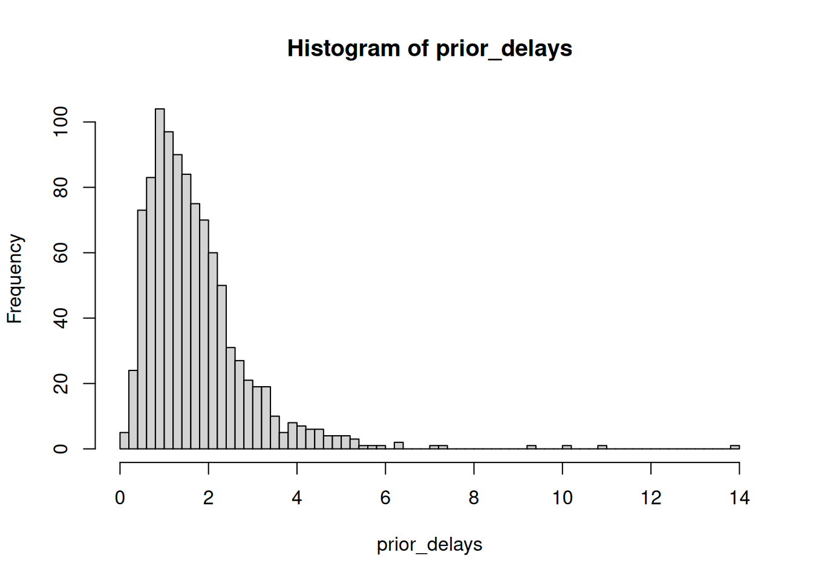

data {
// What we observe
int<lower=0> N; // number of observations
array[N] real y; // the observations
}
parameters {
// What we want to estimate
real<lower=0> mean_delay;
real<lower=0> sd_delay;
}
model {
// How parameters relate to data
// Prior
mean_delay ~ normal(5, 2);
sd_delay ~ normal(2, 1);
// Likelihood
y ~ lognormal(log(mean_delay), sd_delay);
}Stan Reference
Quick reference for using Stan in this course
1. Why Stan in Epidemiology?
- Uncertainty is an unavoidable part of real-world data
- Need to estimate unobserved quantities (true cases, the effective reproduction number, future trends)
- Bayesian approach naturally handles missing data and incorporates prior knowledge
- Stan is a powerful tool for Bayesian inference
What is Stan?
Stan is a probabilistic programming language for Bayesian inference. It allows us to:
- Write down models in a text file (ending
.stan) - Generate samples from the posterior distribution using various methods (like Hamiltonian Monte Carlo)
- Get proper uncertainty quantification for our estimates
We use Stan because: - We’ll need to estimate things (delays, reproduction numbers, case numbers now and in the future) - We’ll want to correctly specify uncertainty - We’ll want to incorporate our domain expertise - We’ll do this using Bayesian inference
2. Just Enough Probability
What is a Probability Distribution?
A probability distribution describes how likely different outcomes are for a random variable.
Discrete distributions (for countable outcomes): - Example: Number of horse kick deaths per year (0, 1, 2, 3, …) - Poisson distribution with \(\lambda\) = 0.61 kicks per year - Probability of exactly 2 deaths: dpois(2, lambda = 0.61) = 0.11
Continuous distributions (for measurable quantities): - Example: Temperature in Stockholm tomorrow - Normal distribution with mean 23°C, standard deviation 2°C - Probability density at 30°C: dnorm(30, mean = 23, sd = 2) = 0.0001
Two Key Operations
- Calculate probability/density: Given parameters, what’s the probability of observing a value?
- Generate samples: Given parameters, simulate random observations
Distributions You’ll See
| Distribution | Used for | Parameters | Example |
|---|---|---|---|
| Log-normal | Delays (e.g., incubation period) | meanlog, sdlog | Symptom onset time |
| Gamma | Delays (alternative) | shape, rate | Hospital length of stay |
| Negative Binomial | Count data with overdispersion | mu, phi | Daily case counts |
| Normal | Continuous measurements | mean, sd | Log(Rt) |
| Beta | Proportions | alpha, beta | Reporting probability |
Key Concept: Parameters vs Data
- Data: What we observe (onset dates, test results)
- Parameters: What we want to learn (mean delay, Rt)
- Model: How parameters generate data
Bayesian Inference in a Nutshell
The generative model can produce output which looks like data given a set of parameters \(\theta\)
Idea of Bayesian inference: treat \(\theta\) as random variables (with a probability distribution) and condition on data: posterior probability p(\(\theta\) | data) as target of inference.
Using Bayes’ rule: \[p(\theta | \text{data}) = \frac{p(\text{data} | \theta) p(\theta)}{p(\text{data})}\]
- p(data | θ) is the likelihood
- p(θ) is the prior
- p(data) is a normalisation constant
In words: (posterior) ∝ (normalised likelihood) × (prior)
MCMC: Getting Samples from the Posterior
Markov-chain Monte Carlo (MCMC) is a method to generate samples of \(\theta\) that come from the posterior distribution given data. This is our target of inference.
Many flavours of MCMC exist:
- Metropolis-Hastings
- Hamiltonian Monte Carlo (what Stan uses)
- Gibbs sampling
Stan uses the No-U-TURN sampler a form of Hamiltonian Monte Carlo sampler to efficiently explore the posterior distribution and generate samples. This has been shown to be efficient across a wide range of models It’s main limitation is that it doesn’t support discrete latent parameters.
3. Stan Basics for This Course
Model Structure
Every Stan model has three essential blocks:
Running Stan from R
library(cmdstanr)
library(nfidd)
# Load a model
model <- nfidd_cmdstan_model("delays")
# Prepare data
stan_data <- list(
N = length(observations),
y = observations
)
# Fit model
fit <- nfidd_sample(model, data = stan_data)
# Extract results
summarise_draws(fit)4. Debugging Tips
Check Your Priors
- Do your priors make sense?
- What range of predictions do they lead to?
- Does this make sense for the data you’re modelling?
Before fitting your model, simulate from your priors to check they make sense:
# Example: checking delay priors
prior_mean_delay <- abs(rnorm(1000, mean = 1.5, sd = 0.5))
prior_sd_delay <- abs(rnorm(1000, mean = 0.5, sd = 0.1))
# Simulate delays from these priors
prior_delays <- rlnorm(
1000,
meanlog = log(prior_mean_delay),
sdlog = prior_sd_delay
)
# Plot to check if reasonable
hist(prior_delays, breaks = 50)
quantile(prior_delays, c(0.025, 0.5, 0.975)) 2.5% 50% 97.5%
0.3895514 1.4303321 4.7254487 Check your model
- Does your model make sense?
- Does it have the parameters you expect?
- Does it have the data you expect?
Check your data
- Does your data make sense?
- Does it have the variables you expect?
- Does it have the right number of observations?
Check your results
- Does your model fit the data?
- Do the parameter estimates make sense?
Use posterior predictive checks to see if your model can reproduce data similar to what you observed: - Does it capture the central tendency of the data? - Does it get the right amount of variability? - Can it reproduce extreme values appropriately?
Compare your posterior predictions to the observed data using density overlays, empirical CDFs, and summary statistics.
Common Issues & Solutions
| Issue | Symptom | What | Solution |
|---|---|---|---|
| Divergent transitions | Warning message | Sampler can’t explore posterior due to geometry of the posterior | Increase adapt_delta |
| Treedepth | Warning message | Sampler hit maximum tree depth before completing trajectory (complex posterior geometry requires longer integration paths) | Increase max_treedepth (e.g., to 12 or 15) |
| Low ESS | ESS < 400 | Poor mixing between chains | Run more iterations |
| High Rhat | Rhat > 1.01 | Chains sampling different distributions (not converged) | Check model specification or run more warmup iterations |
| Initialization failed | Error on startup | Numerical instability at start | Set init values |
Understanding Divergences
Divergent transitions occur when the sampler encounters regions of the posterior that are difficult to explore. This often happens when:
- The posterior has areas of high curvature
- Parameters are on very different scales
- There are strong correlations between parameters
Solutions:
# Increase adapt_delta (default is 0.8)
fit <- nfidd_sample(
model,
data = stan_data,
adapt_delta = 0.95 # or even 0.99 for difficult models
)or reparameterise your model.
5. Going Deeper
Course Models
- See
/inst/stan/for all model code - Each model has comments explaining the approach
External Resources
- Stan User’s Guide
- Prior Choice Wiki
- Bayesian Workflow
- Stan Forums - helpful community